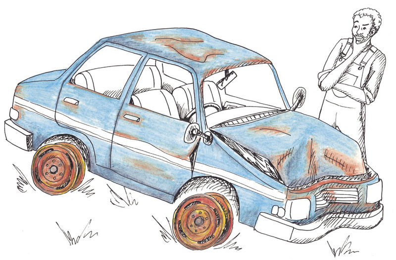

Ondersoek: metale en magnetisme
In Hoofstuk 1 het jy geleer oor magnete en magnetisme. Jy gaan nou ’n ondersoek doen om uit te vind watter metale aangetrek is tot magnete en watter metale nie. Jy gaan ook leer hoekom dit goed is om afvalmetaal te herwin en hoe hierdie belangrike werk gedoen word.
Ons kan ook ander materiale buiten metaal herwin. Plastiek, papier, karton en ander materiale wat gewoonlik weggegooi word, kan eerder herwin word. Aangesien ons natuurlike bronne besig is om al hoe minder te raak, moet ons in plaas daarvan om goed eenvoudig weg te gooi, soveel as wat ons kan, herwin of hergebruik.
Jy gaan begin om ’n herwinningsplan vir jou skool saam te stel deur die afvalprodukte wat deur jou skool geproduseer word, te lys. Jy gaan ook lys hoeveel van hierdie afvalprodukte wel herwin kan word. Baie fabrieke gebruik afvalprodukte, dus kan jy ’n plan ontwerp om fondse vir jou skool in te samel deur afvalprodukte te herwin.

Figuur 1: Metale wat in die huis gebruik word.

Figuur 2

Figuur 3
Magnetiese en nie-magnetiese materiale
In hoofstuk 1 het jy oor magnetisme en magnete geleer. Jy het ook geleer dat nie-metale nie aan magnete vasplak nie, terwyl ander metale wel aan magnete vasplak. Ons sê dat hierdie metale magneties is.
Kyk na die voorwerpe wat van verskillende metale gemaak is, in figuur 4:
Figuur 4: Verskillende soorte metaal.
1. Watter van hierdie voorwerpe is gemaak van magnetiese materiaal? Vul die tabel hieronder in:
|
Materiaal |
Is die materiaal magneties? |
|
|
Ja |
Nee |
|
|
Staal kragtoring |
||
|
Gietyster pot |
||
|
Silver trompet |
||
|
Koperband |
||
|
Geelkoper trompet |
||
|
Lood soldering |
||
|
Goue oorbelle |
||
|
Nikkel toebehore |
||
|
Staalkabel |
||
|
Aluminium rekenaaronderdele |
||
|
Brons pot |
||
|
Blikkan |
||
|
Sleutels |
||
Hoeveel van die metale is magneties? Indien jy gesê het slegs 3, dan is jy korrek. Die metale is staal, yster en nikkel en elkeen van hulle bevat yster en is magneties. Enige metaal wat yster bevat en wat magneties is, word ysterhoudende metaal genoem.
Alhoewel baie mense dink dat blik magneties is, is dit nie ’n ysterhoudende metaal nie. Die blikke waarin voedsel en ander huishoudelike produkte kom, word eintlik van ’n baie dun staal gemaak wat met nog ’n dun lagie blik bedek word om te keer dat die blik deur roes.
Ysterhoudende metale is metale wat yster bevat.
Staal is ’n mengsel van yster en koolstof. Wanneer jy ’n magneet langs ’n blikkan plaas, trek die magneet die yster aan en nie die blik nie.
’n Mens sien gereeld yster wat geroes het. Dit word korrosie genoem. Geroeste yster is steeds magneties.
Sodra ’n metaal in kontak kom met suurstof, vorm dit oor ’n tydperk roes op die staal.
Roes is ook magneties.
Blik en sink roes nie en daarom gebruik ons dit om yster en staal te beskerm.

Figuur 5: Die lagie sink op hierdie daksinkplaat het al verweer.
Ondersoek: toets watter metale magneties is
Algemene metaal voorwerpe.
Daar is in jou daaglikse lewe baie bruikbare metaal voorwerpe om jou. Party is baie groot, soos motors en busse; party is baie klein, soos skuifspelde.
1. In die eerste kolom, maak ’n lys van 15 metaal items wat jy gereeld gebruik of om jou sien.
2. In die tweede kolom moet jy skryf van watter metaal elke voorwerp gemaak is. Indien ’n voorwerp uit meer as een metaal bestaan, skryf dan die metaal neer wat die grootste deel van die voorwerp beslaan. Byvoorbeeld: motors.
3. Toets die items om te sien of hulle magneties is of nie. Skryf jou resultate in die laaste kolom neer.

Figuur 6: Dinge wat jy in jou huis kan vind: ’n vurk, ’n sif, naalde en spykers.
|
Voorwerp |
Metaal |
Magneties: Ja/Nee |
Gevallestudie: herwinning van afvalmetale
Is jy verras dat soveel dinge wat ons daagliks gebruik van metaal gemaak is? Ons gebruik verskillende metale om ons te help met meeste van die dinge wat ons doen. Dit beteken dat fabrieke ’n konstante voorraad metaal benodig om al hierdie items te kan vervaardig. Ons gebruik jaarliks miljoene ton staal, aluminium en ander metale, maar die aarde se voorraad van metaal sal op een of ander stadium opraak. Kan jy dink watter probleme dit sal veroorsaak?
Herwinning is om iets oor en oor te gebruik. Dit kan dalk in ’n ander vorm voorkom, maar ons gebruik die basiese materiale oor en oor.
Die oplossing is om afvalmetale te herwin. Alles wat van metaal gemaak is, kan opgebreek en in hulle basiese dele sorteer word en dan weer gebruik word. Dit sal die land help om miljoene rand te spaar en sal natuurlik ook keer om al die planeet se bronne op te gebruik. Metaal is ideaal vir herwinning omdat dit gesmelt en hergebruik kan word sonder dat dit sy sterkte verloor.
Metaal is ideaal vir herwinning omdat dit gesmelt en hergebruik kan word sonder dat dit sy sterkte verloor.
Figuur 7: Herwinde staalbale.
Die versameling van afvalmetale
Die proses om afvalmetaal te versamel, begin wanneer mense leer om nie metaalvoorwerpe weg te gooi nie. Alles wat van metaal gemaak word, kan herwin word en almal moet seker maak dat voorwerpe wat herwin kan word, nie weggegooi word nie.
Wanneer jy tuis is, maak seker dat alle klein metaal voorwerpe, soos leë blikkies, apart versamel word en na herwinningsentrums gestuur word. Groter voorwerpe soos huishoudelike toestelle sal deur die afvalmetaalhandelaars opgelaai word.

Figuur 8: Die internasionale herwinningssimbool. Wanneer jy hierdie simbool sien, beteken dit dat die materiale wat gebruik is vir hierdie produk, herwin kan word.

Figuur 9: Skrootysterwerwe gebruik magnete om die hope afvalmetaal te sorteer.
Sien jy hoe ’n magneet gebruik kan word om hope metaal te sorteer? Skrootysterhandelaars gebruik groot magnete om die magnetiese metale van die hope te verwyder, wat die hele proses van sortering bespoedig.
Maak geld deur herwinning
Om mense te oortuig om nie waardevolle materiale wat herwin kan word te mors nie, kan skrootwerfhandelaars betaal vir die afvalmetaal. Hulle betaal gewoonlik per massa, so dit maak nie regtig saak in watter vorm of toestand die metaal is nie. Dit is die massa wat belangrik is.
Dit kan egter ook probleme veroorsaak. Sommige mense steel metaal voorwerpe soos werkgatdeksels en koper draad van telefoon- en elektrisiteitskabels om te probeer geld maak. Om hierdie voorwerpe te steel is nie alleenlik oneerlik nie, maar dit kan ook ander mense in gevaar stel. Indien werkgatdeksels gesteel word, los dit gate in die pad en mense kan met hulle motors daarin ry of daarin val; en gesteelde elektrisiteitskabels kan die verlies van krag veroorsaak.
Versamel afvalmetaal op ’n eerlike wyse
1. Dink jy dat daar metaal items is wat nie deur die skrootwerfhandelaars aanvaar moet word nie? Bespreek jou idees met ’n ander leerder. Skryf die items neer wat jy dink nie deur skrootwerfhandelaars behoort gekoop te word nie.
2. Lys ’n paar afvalmetaal voorwerpe wat mense kan versamel om aan skrootwerfhandelaars te verkoop.
3. Indien jy afvalmetaal versamel om aan ’n skrootwerfhandelaar te verkoop, hoe sal jy bewys dat jy die items wettig verkry het? Hier is ’n voorbeeld: “Ek sal die eienaar van die huis vra om vir my ’n brief te gee wat sê dat hulle die items aan my gegee het.” Skryf enige ander stappe neer wat jy dalk kan neem.
Identifiseer herwinbare materiale
Afvalmetaal is nie die enigste materiaal wat herwin kan word nie. Die meeste afval kan herwin word. Daar is maatskappye wat spesialiseer in die versameling van alle vorme van afval wat die gemeenskap op baie manier dien.
In die laaste deel van hierdie hoofstuk gaan jy ondersoek wat ’n herwinningsprogram vir jou skool kan beteken. Voor jy begin om materiale te versamel, hou ’n bespreking in die klas oor watter afvalmateriale wat herwin kan word deur die skool produseer word. Onthou dat dit nie net in jou klaskamer is nie, maar in die hele skool.
Vra een leerder om hierdie items op die bord te skryf met ’n paar voorbeelde van die materiale wat jy heel moontlik by die skool sal vind.
Byvoorbeeld:
Plastiek: melkbottels, koeldrankbottels.
Karton: kartonhouers, kartonbokse.
Hoeveel herwinbare afvalprodukte word deur die skool produseer?
- Vir die volgende week, hou ’n rekord van die hoeveelheid afval wat die skool produseer.
- Dit sal help indien die res van die skool weet dat jy herwinbare afval versamel. Vra jou skoolhoof of jy ’n spesiale afvaldrom, of klein area, kan kry waar leerders hulle herwinbare afval kan plaas. Indien jou skool ekstra asdromme het, kan jy hulle langs die normale asdromme plaas en herwinningsimbole op hulle plak.
- Versamel die herwinbare materiale en sorteer dit in hopies. Plaas die herwinbare materiaal in swart sakke. Knoop die sakke mooi toe en merk elkeen duidelik. Vra jou onderwyser waar jy die materiaal kan stoor terwyl jy dit versamel.
- Vind uit of daar skrootwerfhandelaars naby jou of jou skool is en vra hulle hoeveel hulle sal betaal vir die verskeie tipes materiale.
Veiligheid
Wanneer jy afvalmateriaal versamel, dra altyd handskoene. Was jou hande deeglik nadat jy die materiaal sorteer het.
Herwinningsplan vir jou skool
Maak geld deur herwinning
Jy het vir die laaste week herwinbare afval versamel en gestoor. Doen nou die volgende oefeninge as ’n klas:
- Kry al die afval wat jy versamel het bymekaar en maak seker dat dit korrek sorteer is: een hoop vir papier, een hoop vir karton, en een hoop vir plastiek.
- Plaas die hopies in sakke en merk hulle deeglik volgens dit wat in elke sak is.
- Weeg die verskillende tipes materiaal. Werk die totale gewig van elke materiaal wat jy het, uit.
-
Vermenigvuldig die gewig van die materiaal met die waarde wat die skrootwerfhandelaar gesê het hul sou betaal vir die materiaal.
Byvoorbeeld: 3 kg aluminium blikke teen R3,50 per kg: R3,50 × 3 = R10,50
- Wat is die somtotaal van al die materiale saam.
- Bespreek maniere waarop jy die herwinningsisteem kan verbeter.
- Bespreek maniere om seker te maak dat die hele skool betrokke is en belangstel in hierdie projek.
Skryf ’n individuele verslag oor die waarde wat herwinning vir jou skool inhou
Jy het as ’n klas gewerk om te sien hoeveel herwinbare materiaal in ’n week by jou skool versamel kan word, en ook hoeveel geld gemaak kan word vir skoolprojekte. Elkeen van julle moet nou ’n verslag skryf oor die proses.
Jy moet die volgende onderwerpe insluit:
1. Watter materiale kan die skool herwin?
2. Hoeveel van elke materiaal kan gemiddeld per week versamel word?
3. Wie sal die afval elke dag versamel?
4. Waar sal jy die afvalmateriaal veilig en higiënies kan stoor?
5. Watter skrootwerfhandelaar of herwinningsbesigheid sal die materiaal oplaai, en hoeveel sal hulle daarvoor betaal?
6. Behoort jy ekstra materiaal van jou huis of ander versamelpunte bring om by die skool se afval te voeg om meer geld te maak?
7. Behoort jy die hele skool betrokke te maak by die projek?
8. Skryf nuwe idees neer oor hoe die proses van herwinning meer effektief gemaak kan word om ekstra geld te maak.
Volgende week
In die volgende les gaan jy leer oor eenvoudige elektriese stroombane, hoe om stroombaan diagramme te teken, en hoe om ’n elektromagneet te maak.